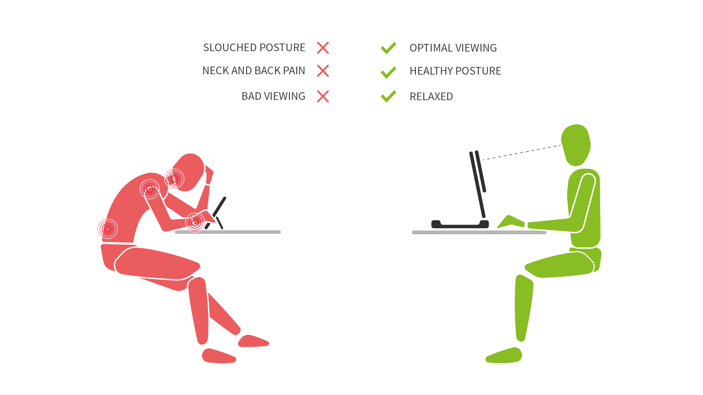

Ergonomics is the study of safe work environments regarding health-related issues such as carpal tunnel syndrome and computer vision syndrome (CVS) caused by prolonged computer use. Carpal tunnel syndrome is numbness, tingling, weakness, and other problems in the hand because of pressure on the median nerve in the wrist. Computer Vision Syndrome is getting headaches, blurred vision, neck pain, fatigue, eye strain, dry eyes, irritated eyes, double vision, dizziness, or difficulty refocusing the eyes by staring at computer screens for hours at a time. To prevent getting these syndromes, computer users need to set a reasonable amount of time they use a computer and let their eyes rest after the certain amount of time. Also, it is important to keep a good posture while using a computer.
